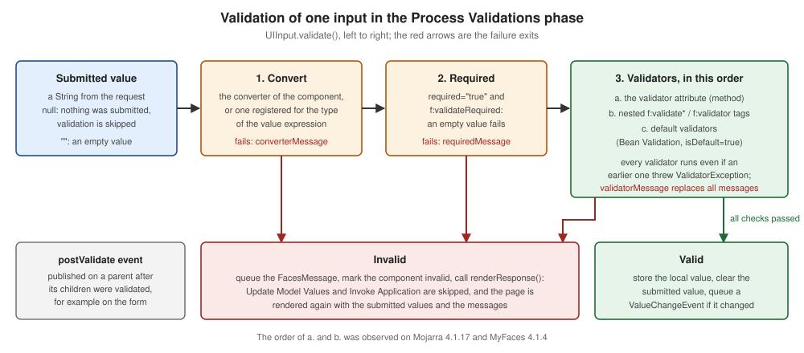

Validators
|
This content was generated with the assistance of AI and should be verified against the official documentation before being relied on in production. |
This page is written against Jakarta Faces 4.1 (API jakarta.faces-api 4.1.2, part of Jakarta EE 11), Eclipse Mojarra
4.1.17 and Apache MyFaces Core 4.1.4, with Java 17 or later and Hibernate Validator 9.1.3 as the Bean Validation
provider. Faces 4.0 behaves the same for everything below; the differences between older releases are collected in
What Changed. The examples were compiled and deployed in a scratch Bookshelf WAR on Tomcat 11.0.26 with Weld 6.0.4.Final,
and the form posts, the messages and the lifecycle behaviour described here were checked with curl against Mojarra
4.1.17. The behaviours that matter for portability were repeated on MyFaces 4.1.4 and are marked in Mojarra and MyFaces
(checked on 2026-10-08).
Conversion answers the question "can this text be turned into a LocalDate?". Validation answers the next one:
"is that date acceptable?". A validator never changes a value. It looks at the converted value, and either returns
quietly or throws a ValidatorException carrying a FacesMessage. Faces ships a handful of standard validators, lets you
write your own as small classes or as methods on a bean, and delegates class-level and constraint-annotation checks to
Bean Validation. This page covers the Faces side; the Bean Validation integration, f:validateBean groups and custom
constraints have their own page in this section: Bean Validation in Jakarta Faces.
How Validation Works
Where Validation Runs
Validators run in the Process Validations phase, phase 3 of the request processing lifecycle. For every UIInput in
the tree the implementation converts the submitted string, checks required, and then calls each registered
validator. An input component whose immediate attribute is true does the same work earlier, in Apply Request Values.
If any input ends up invalid, the lifecycle jumps to Render Response: the model is never updated, the action method never
runs, and the page is rendered again with the submitted values and the queued messages. The lifecycle page of this section
walks through that route (see Phase 3: Process Validations
and Short-Circuiting the Lifecycle); this page concentrates on
what happens inside phase 3.

The figure shows the order of one input’s validation. Four rules fall out of it, and each was observed by running the examples below:
-
A conversion failure or a required failure skips the validators of that input. The user sees one message, not a cascade.
-
Once the input has a converted, non-empty value, every validator runs, even if an earlier one failed. A field with
f:validateLengthand a custom ISBN validator reports both problems at once. -
Validators run in a fixed order: the
validatorattribute (a method expression) first, then the nestedf:validate*andf:validatortags in document order, then the default validators. -
The
postValidatesystem event is published on a component after its children were validated, which is the hook for checks that involve several fields (Cross-Field Validation).
The Validator Interface
A validator is any class that implements jakarta.faces.validator.Validator<T>:
public interface Validator<T> extends EventListener {
void validate(FacesContext context, UIComponent component, T value) throws ValidatorException;
}The component argument is the input being validated, so a validator can read its attributes (component.getAttributes()),
its label or its client id. A failure is reported by throwing a ValidatorException built from a FacesMessage, or from
a collection of messages when one validator finds several problems. The implementation catches the exception, queues the
messages with the component’s client id, marks the component invalid and carries on with the remaining validators.
The standard classes (LengthValidator, LongRangeValidator, DoubleRangeValidator, RegexValidator,
RequiredValidator and BeanValidator) live in jakarta.faces.validator and have a public no-argument constructor. The
ones with settings (all but RequiredValidator) implement PartialStateHolder, so their configuration (the limits) is saved
and restored with the view.
Showing the Messages
A failed validator produces a FacesMessage with a summary and a detail. The two message components show different
parts by default:
-
h:message for="id"shows the detail of the messages of one component (and no summary). -
h:messagesshows the summary of the messages of the whole view (and no detail).globalOnly="true"limits it to messages that are not attached to a component, andshowDetail/showSummarychange what is printed. -
When a
FacesMessagehas no detail, its detail is its summary. A validator that throwsnew FacesMessage(SEVERITY_ERROR, "Invalid", null)therefore looks the same in both components, while one that sets a short summary and a longer detail shows each in its own place. Write a detail that makes sense on its own, because that is whath:messageshows next to the field. -
The standard messages start with the component’s label. Set
label="Rating"on the input. Without it the message starts with the client id, for examplesearch:maxPrice: Validation Error: ....
Required Input
required="true" on an input component, and the f:validateRequired tag nested in it, both enforce that a value is
present. The tag has the same effect as the attribute (the tag’s VDL entry says so) and exists for the cases where a
validator tag is easier to attach than an attribute. A missing value (null) or an empty string fails the check, and the failure skips the other validators of the input.
requiredMessage replaces the message text for this component only. The default is
jakarta.faces.component.UIInput.REQUIRED, which prints the label followed by "Validation Error: Value is required.".
A required input only fails when the request actually carried a parameter for it. When a browser does not send a
field at all, the input is not validated and required does nothing. That is the case for inputs that are disabled,
for a checkbox group with nothing checked, and for a field posted by a script that left it out. Set the context parameter
jakarta.faces.ALWAYS_PERFORM_VALIDATION_WHEN_REQUIRED_IS_TRUE (the constant
UIInput.ALWAYS_PERFORM_VALIDATION_WHEN_REQUIRED_IS_TRUE, added in Faces 2.3) to validate a required input even when
no value was submitted. With the parameter set, a request that omitted a required input produced the required message.
Without it, the same request produced none.
A h:selectOneMenu is the usual way to ask for a choice. Give its first item noSelectionOption="true" and an empty
value; with required="true" the "Choose a genre" item is then reported as a missing value, exactly like an empty text
field.
The Bookshelf review form puts these pieces together. It collects a name, an email address, a rating, a genre and a comment, and every field below uses a different validator:
<!DOCTYPE html>
<html xmlns="http://www.w3.org/1999/xhtml"
xmlns:h="jakarta.faces.html"
xmlns:f="jakarta.faces.core">
<h:head>
<title>Review a book</title>
</h:head>
<h:body>
<h:form id="review">
<h:messages id="msgs" globalOnly="true"/>
<h:outputLabel for="reviewer" value="Name"/>
<h:inputText id="reviewer" value="#{reviewBean.reviewer}" label="Name"
required="true" requiredMessage="Please tell us your name">
<f:validateLength minimum="3" maximum="40"/>
</h:inputText>
<h:message for="reviewer"/>
<h:outputLabel for="email" value="Email"/>
<h:inputText id="email" value="#{reviewBean.email}" label="Email"
validatorMessage="Enter an address such as reader@example.org">
<f:validateRegex pattern="[^@\s]+@[^@\s]+\.[A-Za-z]{2,}"/>
</h:inputText>
<h:message for="email"/>
<h:outputLabel for="rating" value="Rating (1 to 5)"/>
<h:inputText id="rating" value="#{reviewBean.rating}" label="Rating"
converterMessage="The rating must be a whole number">
<f:validateRequired/>
<f:validateLongRange minimum="1" maximum="5"/>
</h:inputText>
<h:message for="rating"/>
<h:outputLabel for="genre" value="Genre"/>
<h:selectOneMenu id="genre" value="#{reviewBean.genre}" label="Genre" required="true">
<f:selectItem itemLabel="Choose a genre" itemValue="" noSelectionOption="true"/>
<f:selectItem itemLabel="Fiction" itemValue="fiction"/>
<f:selectItem itemLabel="Science" itemValue="science"/>
</h:selectOneMenu>
<h:message for="genre"/>
<h:outputLabel for="comment" value="Comment"/>
<h:inputTextarea id="comment" value="#{reviewBean.comment}" label="Comment">
<f:validateLength minimum="10" maximum="500"/>
</h:inputTextarea>
<h:message for="comment"/>
<h:commandButton id="save" value="Save review" action="#{reviewBean.save}"/>
<h:commandButton id="cancel" value="Cancel" action="#{reviewBean.cancel}" immediate="true"/>
<h:outputText id="saved" value="#{reviewBean.saved}"/>
</h:form>
</h:body>
</html>package org.example.bookshelf.web;
import jakarta.faces.view.ViewScoped;
import jakarta.inject.Named;
import java.io.Serializable;
@Named
@ViewScoped
public class ReviewBean implements Serializable {
private String reviewer;
private String email;
private Integer rating;
private String comment;
private String genre;
private String saved = "";
public String save() {
saved = "Thanks, " + reviewer + "!";
return null;
}
public String cancel() {
saved = "Cancelled";
return null;
}
public String getReviewer() { return reviewer; }
public void setReviewer(String reviewer) { this.reviewer = reviewer; }
public String getEmail() { return email; }
public void setEmail(String email) { this.email = email; }
public Integer getRating() { return rating; }
public void setRating(Integer rating) { this.rating = rating; }
public String getComment() { return comment; }
public void setComment(String comment) { this.comment = comment; }
public String getGenre() { return genre; }
public void setGenre(String genre) { this.genre = genre; }
public String getSaved() { return saved; }
}The cancel() method and the immediate="true" button are explained in Skipping and Disabling Validation. A submission with every field
empty shows the custom required text for the name, a required message for the rating and the genre, and the length and
pattern messages for the comment and the email (the reason is in Empty Values and VALIDATE_EMPTY_FIELDS). A submission with Al, bad, 9,
no genre and short produced one message for each field.
The Standard Validators
| Tag | Class and validator id | Attributes | What it checks |
|---|---|---|---|
|
|
|
A value is present. Same effect as |
|
|
|
The number of characters of the value’s string form ( |
|
|
|
An integral value is within the limits. |
|
|
|
A floating-point value is within the limits. |
|
|
|
The whole string matches the |
|
|
|
Bean Validation constraints of the bound property (see the Bean Validation page). |
|
the whole-bean variant of the bean validator |
|
Class-level Bean Validation constraints (f:validateWholeBean). |
|
any |
|
Attaches a custom or registered validator (Custom Validators). |
All the limit attributes accept value expressions, so a limit can come from a bean or a configuration property. When both
a minimum and a maximum are given to a range validator, a value outside the range produces the single
NOT_IN_RANGE message ("… is not between the expected values of 1 and 5") rather than separate minimum and maximum
messages. LengthValidator always reports the minimum or the maximum, never a combined message. f:validateRegex
must match the entire string, so [0-9]{4} rejects 12345. Backslashes in the pattern are written once in XHTML
attribute values (\s), because the attribute is not a Java string literal.
The numeric limits have different types (Long for the integral validator, Double for the other), and the
LengthValidator constructor takes the maximum first: new LengthValidator(80, 2) means "at most 80, at least 2".
The search.xhtml view of the catalogue limits a maximum price with a DoubleRange validator:
<!DOCTYPE html>
<html xmlns="http://www.w3.org/1999/xhtml"
xmlns:h="jakarta.faces.html"
xmlns:f="jakarta.faces.core">
<h:head>
<title>Search the catalogue</title>
</h:head>
<h:body>
<h:form id="search">
<h:outputLabel for="maxPrice" value="Maximum price"/>
<h:inputText id="maxPrice" value="#{searchBean.maxPrice}" label="Maximum price">
<f:validateDoubleRange minimum="0" maximum="500.0"/>
</h:inputText>
<h:message for="maxPrice"/>
<h:commandButton id="go" value="Search" action="#{searchBean.search}"/>
<h:outputText id="result" value="#{searchBean.result}"/>
</h:form>
</h:body>
</html>package org.example.bookshelf.web;
import jakarta.faces.view.ViewScoped;
import jakarta.inject.Named;
import java.io.Serializable;
@Named
@ViewScoped
public class SearchBean implements Serializable {
private Double maxPrice;
private String result = "";
public String search() {
result = "Searching up to " + maxPrice;
return null;
}
public Double getMaxPrice() { return maxPrice; }
public void setMaxPrice(Double maxPrice) { this.maxPrice = maxPrice; }
public String getResult() { return result; }
}Posting 900 produced the range message, abc produced a conversion message from the Double converter (the
validator never ran), and an empty field passed: the converter turns an empty string into null for a Double, and the
range validators skip null.
Source: Jakarta EE Tutorial: Using Validator Tags, VDL: f:validateLength, VDL: f:validateLongRange, VDL: f:validateDoubleRange and VDL: f:validateRegex
Validation Done by the Component Itself
Some components validate without any tag. A UISelectOne or UISelectMany compares the submitted value with the available
items and rejects anything else with jakarta.faces.component.UISelectOne.INVALID ("Value is not valid"). That is why a
value forged outside the browser, here genre=poetry posted with curl to the review form, is rejected even though the menu never
offered it. Client-side checks (maxlength, the HTML required attribute, a JavaScript check) are conveniences for
the user, never a substitute for the server-side validators, because anyone can post any value.
Empty Values and VALIDATE_EMPTY_FIELDS
The text that comes back from an empty input field is the empty string, not null. The Converters
page explains how that empty string becomes null or stays empty depending on the property type. What the validators do with it
depends on a context parameter and on whether Bean Validation is present:
jakarta.faces.VALIDATE_EMPTY_FIELDS |
Behaviour |
|---|---|
|
If Bean Validation is on the class path, behave as |
|
All validators run for empty and |
|
Empty and |
The consequence is easy to miss because it depends on a jar. With Hibernate Validator in WEB-INF/lib (so the default
auto means true), an optional String field that carries f:validateRegex or a minimum f:validateLength fails when
the user leaves it empty: in the review form above an empty email produced the "Enter an address" message and an empty
comment produced the minimum-length message. With the parameter set to false the same submission passed. The numeric
range validators and the optional Double field of the previous section are not affected, because an empty field is
converted to null and those validators ignore null.
There are three ways to keep an optional text field optional, and each was verified:
-
Set
jakarta.faces.INTERPRET_EMPTY_STRING_SUBMITTED_VALUES_AS_NULLtotrue(constantUIInput.EMPTY_STRING_AS_NULL_PARAM_NAME). An empty text field then reaches the validators asnull, which the standard validators ignore. It also storesnullinstead of""in the model, which is usually what a database column wants. With it set, the review form accepted an empty email and an empty comment. -
Set
jakarta.faces.VALIDATE_EMPTY_FIELDStofalse, at the price of losing@NotNulland@NotEmptyfeedback on empty fields. -
Write the validators so that they accept an empty value. A custom validator should always begin with
if (value == null || value.isBlank()) return;and leave "must be present" torequired(as the ISBN validator below does).
<context-param>
<param-name>jakarta.faces.INTERPRET_EMPTY_STRING_SUBMITTED_VALUES_AS_NULL</param-name>
<param-value>true</param-value>
</context-param>Customising Messages
There are three levels, from most local to most global.
On the component. requiredMessage, converterMessage and validatorMessage are attributes of every input. The first two
replace the required and conversion messages of that input. validatorMessage replaces the message of every
validator of that input, including custom ones. In the review form the email field uses it, so any failure of the pattern
shows "Enter an address such as reader@example.org". This is fine for one validator and loses information when an input
has several, because all of them show the same text.
In a message bundle. Every standard message is looked up by a key, and the application can supply its own bundle that wins over the
built-in one. Register it in faces-config.xml:
<application>
<message-bundle>org.example.bookshelf.validation</message-bundle>
</application>jakarta.faces.component.UIInput.REQUIRED=Please fill in "{0}".
jakarta.faces.validator.LengthValidator.MINIMUM={1} needs at least {0} characters.
jakarta.faces.validator.LengthValidator.MINIMUM_detail=Type at least {0} characters in "{1}".
jakarta.faces.validator.LongRangeValidator.NOT_IN_RANGE={2} must be between {0} and {1}.The keys are the message ids from the API documentation (jakarta.faces.validator.LengthValidator.MINIMUM,
jakarta.faces.validator.LongRangeValidator.NOT_IN_RANGE, jakarta.faces.component.UIInput.REQUIRED, and so on). The
parameters are {0}, {1} and, for the range messages that name both limits, {2}: for the length messages {0} is the limit and
{1} the label; for NOT_IN_RANGE {0} and {1} are the limits and {2} the label; for REQUIRED {0} is the label. A key with the
suffix _detail supplies the detail text. With this bundle the short review Al showed "Name needs at least 3 characters." in h:messages
and Type at least 3 characters in "Name". in h:message. Apostrophes in a message that has parameters are doubled
(''{0}''), because the text goes through java.text.MessageFormat. Put one bundle file per locale beside it
(validation_es.properties) and Faces picks the one that fits the view’s locale; the Messages and Internationalization page of this
section covers locale handling and the whole message-bundle mechanism.
In a validator. A custom validator builds its own FacesMessage, and the message can come from a bundle there too; the
messages page shows the ISBN validator doing exactly that, with an English
and a Spanish text.
Custom Validators
A custom validator is worth writing when a rule is specific to your domain and is used on more than one input. A rule used once is simpler as a validator method on the bean. Both forms are shown here on the same form, which adds a book to the Bookshelf catalogue.
A Validator Class with @FacesValidator(managed = true)
The class implements Validator<T> and is registered with @FacesValidator. The annotation has three attributes:
-
valueis the validator id used byf:validator validatorId="...". When it is omitted, the id is the simple class name with its first letter in lower case. -
managedsays whether the validator is a CDI-managed bean. The default isfalse: the runtime creates the instance itself and@Injectfields staynull(an injected field wasnullin an unmanaged validator on Mojarra 4.1.17). Withmanaged = truethe instance comes from CDI, so the validator can inject services (the specification lists@FacesValidator(managed=true)among the artefacts that support@Inject, a feature added in Faces 2.3). -
isDefaultregisters the validator as a default validator (Default Validators, which also notes a MyFaces difference).
The ISBN validator below is the managed form of the bookshelf.isbnLength validator that the
messages page shows with texts from a resource bundle. Here the accepted lengths come from an injected
service, and the texts are written inline to keep the example short.
package org.example.bookshelf.web;
import jakarta.enterprise.context.Dependent;
import jakarta.faces.application.FacesMessage;
import jakarta.faces.component.UIComponent;
import jakarta.faces.context.FacesContext;
import jakarta.faces.validator.FacesValidator;
import jakarta.faces.validator.Validator;
import jakarta.faces.validator.ValidatorException;
import jakarta.inject.Inject;
@Dependent
@FacesValidator(value = "bookshelf.isbnLength", managed = true)
public class IsbnLengthValidator implements Validator<String> {
@Inject
private IsbnRules rules;
@Override
public void validate(FacesContext context, UIComponent component, String value) {
if (value == null || value.isBlank()) {
return; // leave "required" to the required attribute
}
int digits = value.replace("-", "").length();
if (!rules.allowedLengths().contains(digits)) {
FacesMessage message = new FacesMessage(FacesMessage.SEVERITY_ERROR,
"Invalid ISBN length", "An ISBN has 10 or 13 digits, but this one has " + digits + ".");
throw new ValidatorException(message);
}
}
}package org.example.bookshelf.web;
import jakarta.enterprise.context.ApplicationScoped;
import java.util.Set;
@ApplicationScoped
public class IsbnRules {
public Set<Integer> allowedLengths() {
return Set.of(10, 13);
}
}The validator returns quietly for a blank value, counts the digits after removing hyphens, and reports a message whose
summary and detail are both meaningful. The scope annotation deserves attention. @FacesValidator(managed = true) is
a qualifier, not a bean-defining annotation. With the beans.xml of the Project Setup page of this section
(bean-discovery-mode="annotated"), Mojarra failed on the first request with a message ending "could not be resolved by CDI. Check that beans.xml is present", until the class carried @Dependent. With bean-discovery-mode="all" the annotation was not
needed. Keep a managed validator stateless: the same instance may serve many requests when you give it a wider scope, and
a stateful validator is a thread-safety bug.
The second validator takes a parameter from the page. It reads the attribute minWords of the component it validates, set with
f:attribute:
package org.example.bookshelf.web;
import jakarta.faces.application.FacesMessage;
import jakarta.faces.component.UIComponent;
import jakarta.faces.context.FacesContext;
import jakarta.faces.validator.FacesValidator;
import jakarta.faces.validator.Validator;
import jakarta.faces.validator.ValidatorException;
@FacesValidator("bookshelf.minWords")
public class MinWordsValidator implements Validator<String> {
@Override
public void validate(FacesContext context, UIComponent component, String value) {
Object configured = component.getAttributes().get("minWords");
if (value == null || value.isBlank() || configured == null) {
return;
}
int minWords = Integer.parseInt(configured.toString());
int words = value.trim().split("\\s+").length;
if (words < minWords) {
throw new ValidatorException(new FacesMessage(FacesMessage.SEVERITY_ERROR,
"Too few words",
"Please write at least " + minWords + " words. You wrote " + words + "."));
}
}
}f:attribute value="3" stores the string "3", so the validator converts it. An attribute set with a value expression such
as value="#{bookFormBean.minimum}" would arrive with the type of that expression, which is why the code calls toString()
before parsing. This validator has no injected collaborators, so it is a plain @FacesValidator("bookshelf.minWords").
A Validator Method on a Bean
The validator attribute of an input takes a method expression whose method has the same parameters as
Validator.validate(): (FacesContext, UIComponent, Object), returning void. It is the lightest way to add a rule and
it can use the bean’s injected services:
package org.example.bookshelf.web;
import jakarta.faces.application.FacesMessage;
import jakarta.faces.component.UIComponent;
import jakarta.faces.context.FacesContext;
import jakarta.faces.validator.LengthValidator;
import jakarta.faces.validator.Validator;
import jakarta.faces.validator.ValidatorException;
import jakarta.faces.view.ViewScoped;
import jakarta.inject.Inject;
import jakarta.inject.Named;
import java.io.Serializable;
import org.example.bookshelf.service.BookService;
@Named
@ViewScoped
public class BookFormBean implements Serializable {
private String title;
private String isbn;
private String notes;
private String saved = "";
@Inject
private BookService books;
public void validateIsbnUnique(FacesContext context, UIComponent component, Object value) {
if (value != null && books.existsByIsbn(value.toString())) {
throw new ValidatorException(
new FacesMessage(FacesMessage.SEVERITY_ERROR, "This ISBN is already in the catalogue", null));
}
}
public Validator<?> getTitleLength() {
return new LengthValidator(80, 2);
}
public String save() {
saved = "Saved " + title;
return null;
}
public String getTitle() { return title; }
public void setTitle(String title) { this.title = title; }
public String getIsbn() { return isbn; }
public void setIsbn(String isbn) { this.isbn = isbn; }
public String getNotes() { return notes; }
public void setNotes(String notes) { this.notes = notes; }
public String getSaved() { return saved; }
}package org.example.bookshelf.service;
import jakarta.enterprise.context.ApplicationScoped;
import java.util.Set;
@ApplicationScoped
public class BookService {
private final Set<String> isbns = Set.of("9780132350884", "9780134685991");
public boolean existsByIsbn(String isbn) {
return isbns.contains(isbn.replace("-", ""));
}
}<!DOCTYPE html>
<html xmlns="http://www.w3.org/1999/xhtml"
xmlns:h="jakarta.faces.html"
xmlns:f="jakarta.faces.core">
<h:head>
<title>Add a book</title>
</h:head>
<h:body>
<h:form id="book">
<h:outputLabel for="title" value="Title"/>
<h:inputText id="title" value="#{bookFormBean.title}" label="Title" required="true">
<f:validator binding="#{bookFormBean.titleLength}"/>
</h:inputText>
<h:message for="title"/>
<h:outputLabel for="isbn" value="ISBN"/>
<h:inputText id="isbn" value="#{bookFormBean.isbn}" label="ISBN"
validator="#{bookFormBean.validateIsbnUnique}">
<f:validator validatorId="bookshelf.isbnLength"/>
</h:inputText>
<h:message for="isbn"/>
<h:outputLabel for="notes" value="Notes (at least three words)"/>
<h:inputTextarea id="notes" value="#{bookFormBean.notes}" label="Notes">
<f:validator validatorId="bookshelf.minWords"/>
<f:attribute name="minWords" value="3"/>
</h:inputTextarea>
<h:message for="notes"/>
<h:commandButton id="save" value="Add book" action="#{bookFormBean.save}"/>
<h:outputText id="saved" value="#{bookFormBean.saved}"/>
</h:form>
</h:body>
</html>The form combines all the forms of attachment in one input each:
-
titlebinds an instance returned by a bean property with<f:validator binding="..."/>.getTitleLength()builds the standardLengthValidatorprogrammatically. Thebindingattribute is the way to give a standard validator limits that are computed in Java. -
isbnhas the validator method (validatorattribute) and the registered class (f:validator validatorId). Submitting123showed the length message; submitting978-0-13-235088-4(a catalogue ISBN) showed the "already in the catalogue" message; and submitting an ISBN of the right length that is not in the catalogue passed. -
notesusesf:attributeto pass the minimum word count tobookshelf.minWords:two wordsgave "Please write at least 3 words. You wrote 2.".
When the same input has the validator attribute and nested validator tags, the method ran first, then the tag validators
(on both Mojarra and MyFaces). Do not rely on the order for correctness; make each validator independent.
Programmatic registration also exists. EditableValueHolder.addValidator(Validator) adds a validator to a component, and
Application.createValidator("jakarta.faces.Length") creates a registered validator by id. They are used by component
libraries and by code that builds views programmatically, not in everyday page code.
Default Validators
A default validator is registered on every UIInput in the application without a tag. It is declared in
faces-config.xml:
<?xml version="1.0" encoding="UTF-8"?>
<faces-config xmlns="https://jakarta.ee/xml/ns/jakartaee"
xmlns:xsi="http://www.w3.org/2001/XMLSchema-instance"
xsi:schemaLocation="https://jakarta.ee/xml/ns/jakartaee https://jakarta.ee/xml/ns/jakartaee/web-facesconfig_4_1.xsd"
version="4.1">
<application>
<message-bundle>org.example.bookshelf.validation</message-bundle>
<default-validators>
<validator-id>bookshelf.noControlCharacters</validator-id>
</default-validators>
</application>
</faces-config>The runtime calls Application.addDefaultValidatorId() for each entry at startup. Default validators are appended after the
validators written on the component, and a default validator is not added to an input that already has a validator with the
same id. A default-validators list in one configuration resource replaces the list from the ones processed before it,
and an empty <default-validators/> clears it. The validator itself is an ordinary @FacesValidator:
package org.example.bookshelf.web;
import jakarta.faces.application.FacesMessage;
import jakarta.faces.component.UIComponent;
import jakarta.faces.context.FacesContext;
import jakarta.faces.validator.FacesValidator;
import jakarta.faces.validator.Validator;
import jakarta.faces.validator.ValidatorException;
@FacesValidator("bookshelf.noControlCharacters")
public class NoControlCharactersValidator implements Validator<Object> {
@Override
public void validate(FacesContext context, UIComponent component, Object value) {
if (value instanceof String text && text.chars().anyMatch(c -> Character.isISOControl(c) && c != '\n' && c != '\r' && c != '\t')) {
throw new ValidatorException(new FacesMessage(FacesMessage.SEVERITY_ERROR,
"Control characters are not allowed", null));
}
}
}With the entry in place, a title containing the control character U+0001 was rejected by the book form, and so was every other
input of the application, with no validator tag on any page. The specification also lets a validator declare itself default with
@FacesValidator(value = "...", isDefault = true). Mojarra 4.1.17 honoured it. MyFaces 4.1.4 ignored the attribute in the same
application (the validator was never called), so for code that must run on both the faces-config.xml entry is the portable form.
The standard Bean Validation validator is itself a default validator: when Bean Validation is present, the validator id
jakarta.faces.Bean is added to the default list regardless of the configuration, so every input with a bound property is
checked against the constraints of that property. Setting the context parameter
jakarta.faces.validator.DISABLE_DEFAULT_BEAN_VALIDATOR to true turns that off for the application.
To opt a single input out of a default validator, nest the same id with disabled="true":
<h:inputText id="reviewer" value="#{reviewBean.reviewer}" label="Name">
<f:validator validatorId="bookshelf.noControlCharacters" disabled="true"/>
</h:inputText>On Mojarra 4.1.17 the control-character name was accepted with that element in place. On MyFaces 4.1.4 the same page still ran
the default validator and rejected it, so do not rely on the opt-out when the application may run on MyFaces; make the default
validator tolerant instead, or attach the validator explicitly to the inputs that need it. The Bean Validation form of the
opt-out, <f:validateBean disabled="true"/>, is described in the Bean Validation page of this section, where it was run on Mojarra only.
Use default validators sparingly. They run on every input in the application, including inputs written by other teams and by component libraries, so a default validator must be cheap and must tolerate any value type.
Cross-Field Validation
A Validator sees one value. A rule such as "the return date must not be before the start date" involves two inputs, and
neither input can validate it alone: the first validator runs before the second input has been converted. Faces offers two
standard answers and a library one.
The postValidate Event
Publishing PostValidateEvent happens after a component’s children have been validated. A listener registered with
f:event type="postValidate" on the form therefore runs after every field in it was converted and validated, and can
compare their values:
package org.example.bookshelf.web;
import jakarta.faces.application.FacesMessage;
import jakarta.faces.component.UIComponent;
import jakarta.faces.component.UIInput;
import jakarta.faces.context.FacesContext;
import jakarta.faces.event.ComponentSystemEvent;
import jakarta.faces.view.ViewScoped;
import jakarta.inject.Named;
import java.io.Serializable;
import java.time.LocalDate;
@Named
@ViewScoped
public class BorrowBean implements Serializable {
private LocalDate from;
private LocalDate to;
private String result = "";
public void validatePeriod(ComponentSystemEvent event) {
FacesContext context = FacesContext.getCurrentInstance();
UIComponent form = event.getComponent();
UIInput fromInput = (UIInput) form.findComponent("from");
UIInput toInput = (UIInput) form.findComponent("to");
if (!fromInput.isValid() || !toInput.isValid()) {
return; // a field-level error already explains the problem
}
LocalDate fromDate = (LocalDate) fromInput.getValue();
LocalDate toDate = (LocalDate) toInput.getValue();
if (fromDate != null && toDate != null && toDate.isBefore(fromDate)) {
context.addMessage(toInput.getClientId(context), new FacesMessage(FacesMessage.SEVERITY_ERROR,
"The return date must not be before the start date", null));
toInput.setValid(false);
context.renderResponse();
}
}
public String submit() {
result = "borrowed " + from + " to " + to;
return null;
}
public LocalDate getFrom() { return from; }
public void setFrom(LocalDate from) { this.from = from; }
public LocalDate getTo() { return to; }
public void setTo(LocalDate to) { this.to = to; }
public String getResult() { return result; }
}<!DOCTYPE html>
<html xmlns="http://www.w3.org/1999/xhtml"
xmlns:h="jakarta.faces.html"
xmlns:f="jakarta.faces.core">
<h:head><title>Borrow</title></h:head>
<h:body>
<h:form id="borrow">
<f:event type="postValidate" listener="#{borrowBean.validatePeriod}"/>
<h:messages id="msgs"/>
<h:outputLabel for="from" value="From"/>
<h:inputText id="from" value="#{borrowBean.from}" label="From" required="true">
<f:convertDateTime type="localDate" pattern="yyyy-MM-dd"/>
</h:inputText>
<h:message for="from"/>
<h:outputLabel for="to" value="To"/>
<h:inputText id="to" value="#{borrowBean.to}" label="To" required="true">
<f:convertDateTime type="localDate" pattern="yyyy-MM-dd"/>
</h:inputText>
<h:message for="to"/>
<h:commandButton id="submit" value="Request" action="#{borrowBean.submit}"/>
<h:outputText id="result" value="#{borrowBean.result}"/>
</h:form>
</h:body>
</html>The listener skips the check if either field already failed, so the user is told about the first problem first. It reads the
validated values with getValue(), adds a message on the to input, and then does two things that are easy to forget:
toInput.setValid(false) marks the input invalid so the model is not updated, and context.renderResponse() sends the lifecycle
to Render Response. Together they behave like a validator failure. The effect of each part was tested on Mojarra 4.1.17:
-
Only
FacesContext.addMessage()shows the message but the action method still ran with a start date after the end date. A message does not fail validation. -
context.validationFailed()alone did not stop the action either. It records that a validation error occurred; it does not change the route (the lifecycle page says the same). -
setValid(false)stopped the action, and so didsetValid(false)together withrenderResponse(). MyFaces 4.1.4 behaved the same with both calls. Use both, as in the listing.
Submitting 2026-10-10 and 2026-10-01 showed "The return date must not be before the start date", submitting them the right
way round queued the request, and xx as the start date showed only the converter message.
f:validateWholeBean
f:validateWholeBean (Faces 2.3) moves the cross-field rule from the page into the model, as a class-level Bean Validation
constraint. It needs a few pieces, all of which are required:
-
The application parameter
jakarta.faces.validator.ENABLE_VALIDATE_WHOLE_BEANset totrue. Without it the tag is a no-op. With the parameter missing, the invalid period below was accepted and the action ran. -
A CDI backing bean that Faces can copy: it is
Serializable(tried first), orCloneable, or has a copy constructor, otherwise Faces throws aFacesException. Faces validates a copy of the bean, populated with the already-validated field values, and throws the copy away. -
A class-level constraint on the bean, in a validation group that is not only the default group.
-
f:validateBeanwith the samevalidationGroupson every input that contributes, andf:validateWholeBeanplaced after those inputs in the tree.
The class-level check only runs when every contributing field is individually valid.
package org.example.bookshelf.web;
import jakarta.faces.view.ViewScoped;
import jakarta.inject.Named;
import java.io.Serializable;
import java.time.LocalDate;
@Named
@ViewScoped
@ValidPeriod(groups = PeriodGroup.class)
public class PeriodBean implements Serializable {
private LocalDate from;
private LocalDate to;
private String result = "";
public String submit() {
result = "borrowed " + from + " to " + to;
return null;
}
public LocalDate getFrom() { return from; }
public void setFrom(LocalDate from) { this.from = from; }
public LocalDate getTo() { return to; }
public void setTo(LocalDate to) { this.to = to; }
public String getResult() { return result; }
}package org.example.bookshelf.web;
public interface PeriodGroup {
}package org.example.bookshelf.web;
import jakarta.validation.Constraint;
import jakarta.validation.Payload;
import java.lang.annotation.Documented;
import java.lang.annotation.Retention;
import java.lang.annotation.Target;
import static java.lang.annotation.ElementType.TYPE;
import static java.lang.annotation.RetentionPolicy.RUNTIME;
@Documented
@Constraint(validatedBy = ValidPeriodValidator.class)
@Target(TYPE)
@Retention(RUNTIME)
public @interface ValidPeriod {
String message() default "The return date must not be before the start date";
Class<?>[] groups() default {};
Class<? extends Payload>[] payload() default {};
}package org.example.bookshelf.web;
import jakarta.validation.ConstraintValidator;
import jakarta.validation.ConstraintValidatorContext;
public class ValidPeriodValidator implements ConstraintValidator<ValidPeriod, PeriodBean> {
@Override
public boolean isValid(PeriodBean bean, ConstraintValidatorContext context) {
if (bean.getFrom() == null || bean.getTo() == null) {
return true;
}
return !bean.getTo().isBefore(bean.getFrom());
}
}<!DOCTYPE html>
<html xmlns="http://www.w3.org/1999/xhtml"
xmlns:h="jakarta.faces.html"
xmlns:f="jakarta.faces.core">
<h:head><title>Period</title></h:head>
<h:body>
<h:form id="period">
<h:messages id="msgs"/>
<h:outputLabel for="from" value="From"/>
<h:inputText id="from" value="#{periodBean.from}" label="From" required="true">
<f:convertDateTime type="localDate" pattern="yyyy-MM-dd"/>
<f:validateBean validationGroups="org.example.bookshelf.web.PeriodGroup"/>
</h:inputText>
<h:outputLabel for="to" value="To"/>
<h:inputText id="to" value="#{periodBean.to}" label="To" required="true">
<f:convertDateTime type="localDate" pattern="yyyy-MM-dd"/>
<f:validateBean validationGroups="org.example.bookshelf.web.PeriodGroup"/>
</h:inputText>
<f:validateWholeBean value="#{periodBean}" validationGroups="org.example.bookshelf.web.PeriodGroup"/>
<h:commandButton id="submit" value="Request" action="#{periodBean.submit}"/>
<h:outputText id="result" value="#{periodBean.result}"/>
</h:form>
</h:body>
</html><context-param>
<param-name>jakarta.faces.validator.ENABLE_VALIDATE_WHOLE_BEAN</param-name>
<param-value>true</param-value>
</context-param>With the parameter set, 2026-10-10 to 2026-10-01 produced the constraint message and the action did not run. The
reverse order was accepted. The constraint validator treats a missing date as valid (return true), so "must be present"
stays with the required attributes of the fields.
Which one to choose:
postValidate listener |
f:validateWholeBean |
|
|---|---|---|
Where the rule lives |
The backing bean or a utility class |
The model class, as a Bean Validation constraint (reusable outside Faces) |
Setup |
One |
A context parameter, a group, a constraint and per-field |
You must call |
|
Nothing; Faces marks the contributing inputs invalid |
Fits |
A one-off rule on one form |
A rule that also protects a service or a REST resource |
Both implementations accept the tag, with one visible difference: MyFaces 4.1.4 prefixed the message with the generated client id
of the hidden component (period:j_id_c: The return date ...), where Mojarra 4.1.17 showed the bare message.
OmniFaces Multi-Field Validators
OmniFaces ships ready-made multi-field validators so that common comparisons need no Java at all: o:validateEqual
(all values are the same, for a password and its confirmation), o:validateOrder (values ascending or descending),
o:validateAll, o:validateOne, o:validateOneOrMore, o:validateOneOrNone, o:validateAllOrNone and
o:validateMultiple, among others. They are tags with a components attribute holding the client ids of the inputs:
<o:validateOrder type="lte" components="from to"
message="The return date must not be before the start date" showMessageFor="from"/>This snippet follows the OmniFaces documentation and was not run in the scratch application. The OmniFaces page of this section introduces the library.
Validation and Ajax
An f:ajax on an input submits just that input (execute="@this"), runs it through the lifecycle, and re-renders the
message component named in render. This is how a field is validated when the user leaves it, before the form is submitted:
<!DOCTYPE html>
<html xmlns="http://www.w3.org/1999/xhtml"
xmlns:h="jakarta.faces.html"
xmlns:f="jakarta.faces.core">
<h:head><title>Inline</title></h:head>
<h:body>
<h:form id="inline">
<h:outputLabel for="rating" value="Rating"/>
<h:inputText id="rating" value="#{reviewBean.rating}" label="Rating" required="true">
<f:validateLongRange minimum="1" maximum="5"/>
<f:ajax event="blur" execute="@this" render="ratingMsg"/>
</h:inputText>
<h:message id="ratingMsg" for="rating"/>
<h:outputLabel for="reviewer" value="Name"/>
<h:inputText id="reviewer" value="#{reviewBean.reviewer}" label="Name" required="true"/>
<h:commandButton id="save" value="Save" action="#{reviewBean.save}"/>
</h:form>
</h:body>
</html>A partial request for inline:rating=9 (event blur) came back as a partial-response whose update for inline:ratingMsg
contained the range message. Three details matter. Only the components named in execute are validated: the "Name" input is
not part of this request, so its required check does not fire until the form is submitted. A h:message must be in the
render list, because it is what carries the text back to the page. And the validators are exactly the
ones used by the full submit, so there is no second set of rules to keep in sync. The f:ajax tag itself is covered by the Ajax
page of this section.
Skipping and Disabling Validation
-
immediate="true"on a command button makes its action run in Apply Request Values and skips Process Validations for the other (non-immediate) inputs. It is the right tool for a Cancel button: with the review form empty, the Save button produced the required messages and the Cancel button rancancel()with no validation at all. It is the wrong tool for "validate only some fields", whichexecuteonf:ajaxdoes cleanly. Theimmediateattribute has its own section in the lifecycle page (The immediate Attribute). -
disabled="true"on a validator tag (f:validateLength,f:validator,f:validateBean…) leaves that validator off the component, anddisabledaccepts an expression, so a rule can depend on state. -
A component whose
renderedisfalseis not decoded and not validated. -
requiredcan be a value expression (required="#{bean.mandatory}"), evaluated each time the input is validated.
What Changed
| Version | Change |
|---|---|
Faces 2.0 |
|
Faces 2.3 |
|
Faces 3.0 (Jakarta EE 9) |
The |
Faces 4.0 (Jakarta EE 10) |
The tag libraries use the |
Faces 4.1 (Jakarta EE 11) |
The change list of the specification contains nothing specific to validators. Java 17 is required. |
The older namespaces http://xmlns.jcp.org/jsf/core and http://java.sun.com/jsf/core are replaced in the examples by
jakarta.faces.core; the Facelets and XHTML Views page explains the migration.
Mojarra and MyFaces
Everything below ran the same way on both implementations, in the same scratch application: the order of validation (the
validator method, then the nested tags), the validation of empty fields when Bean Validation is present, the managed
validator with @Dependent, the default validator declared in faces-config.xml, the message bundle (including _detail keys), the
postValidate listener with setValid(false) and renderResponse(), f:validateWholeBean and f:ajax validation. Differences
and gotchas found:
-
@FacesValidator(isDefault = true): honoured by Mojarra 4.1.17, ignored by MyFaces 4.1.4. Use thefaces-config.xmlentry. -
Opting out of a default validator with
<f:validator validatorId="..." disabled="true"/>worked on Mojarra and had no effect on MyFaces. -
f:validateWholeBeanmessages: MyFaces 4.1.4 prefixed the message with the generated id of the hidden component; Mojarra 4.1.17 did not. -
Scripted requests: MyFaces recognises a postback by the hidden
formId_SUBMITinput it renders in each form. Acurlpost that omits it is treated as an initial request and shows no messages. Mojarra recognises the postback from the view state parameter alone. Browsers send both, so this only matters in scripts and tests that post forms by hand. -
The default value
autoofjakarta.faces.VALIDATE_EMPTY_FIELDSbehaved the same on both (an empty optional field with a pattern or minimum length failed). Explicittrueorfalse, andjakarta.faces.INTERPRET_EMPTY_STRING_SUBMITTED_VALUES_AS_NULL, were checked on Mojarra only. -
The default message texts of the standard range validators were identical on both in this run. Use your own bundle if a message must not change between runtimes.
Where the Books Are Outdated
The books of the section’s bibliography that cover validation (those by Burns and Schalk, Leonard, Mann and Dudney et al.) were written for Faces 1.x and 2.0. The ideas (validators as small classes, messages, a phase that runs them) are still right; several details are not:
-
Namespaces and ids.
javax.faces.Length,javax.faces.LongRange,javax.faces.validator.*and thehttp://java.sun.com/jsf/corenamespace arejakarta.faces.*today. Code that registers a validator infaces-config.xmlwith thejavaxclass name does not load. -
No injection. Older examples look up services from a static helper or from
FacesContextinside the validator. Today a@FacesValidator(managed = true)validator injects them with@Inject; a validator method on a CDI bean injects them like any bean. -
Tag handlers and JSP. Writing a validator tag as a JSP tag handler with a TLD file is gone with JSP support (removed in 4.0); Facelets
f:validatorwith an id orbindingreplaces it, and@FacesValidatorreplaces the<validator>XML entry (which is still accepted). -
Programmatic bindings. The book recipes that create a
MethodBindingto attach a validator method no longer compile; useMethodExpressionthroughMethodExpressionValidatoror, better, thevalidatorattribute. -
Missing tags. Before Faces 2.0 there was no
f:validateRegexorf:validateRequired, which is why older material writes "regular expression" and "required" validators by hand. Use the standard tags. -
Cross-field validation. Recipes from that era compare two fields with a validator that looks up the other component by id, or use the validator tags of libraries such as Tomahawk (for example
t:validateEqual), whose newest release is from 2012 (see the file upload page) and predates thejakarta.facesnamespace. The standard approaches are thepostValidatelistener andf:validateWholeBeanabove, and OmniFaces'o:validateEqualfamily. -
Client-side validation. Hand-written JavaScript checks and the old component-library client validators are replaced by Bean Validation constraints, HTML5 attributes (see HTML5-Friendly Markup) and, with PrimeFaces, its client-side validation framework, which is covered on the PrimeFaces Ajax, forms and validation page of this section.
Common Mistakes
-
A message that is not shown. A validation error on an input without a nearby
h:message(or a page withouth:messages) silently skips the action. During development, keep oneh:messageson the page and theDevelopmentproject stage on, which prints unhandled messages at the end of the page. -
Optional fields that are suddenly required. The
VALIDATE_EMPTY_FIELDSbehaviour above: a pattern or a minimum length rejects an empty optional text field as soon as Hibernate Validator is on the class path. SetINTERPRET_EMPTY_STRING_SUBMITTED_VALUES_AS_NULLtotrue, or make the validator accept empty values. -
validatorMessagehides the real reason. It replaces the messages of every validator on that input. Use it for an input with a single rule. -
requiredand fields that were not posted. The required check needs a submitted parameter (Required Input). -
A cross-field message that does not stop the action. Adding a message is not enough; mark an input invalid and call
renderResponse(), or usef:validateWholeBean. -
Using
immediate="true"on inputs to "skip validation". It moves validation to an earlier phase and changes when value change events fire; it does not switch it off for the input itself. Use it on the Cancel button. -
A managed validator that is never found. With
bean-discovery-mode="annotated"the class needs a scope annotation such as@Dependent. -
Validation as security. Validators check shape. They do not make a value safe to put into HTML, SQL or a file path. Keep Faces' output escaping on (
h:outputTextescapes by default) and use parameterised queries; see the security page. -
Heavy work in validators. A validator runs once per input per postback, and a lookup that hits the database for every keystroke of an
f:ajaxfield is a performance problem. Cache, debounce on the client, or validate on submit. -
Writing the same rule twice. A rule enforced by a validator on the page and again by a constraint on the model drifts apart. Prefer the constraint (Bean Validation page) for rules about the data and keep validators for rules about the input.